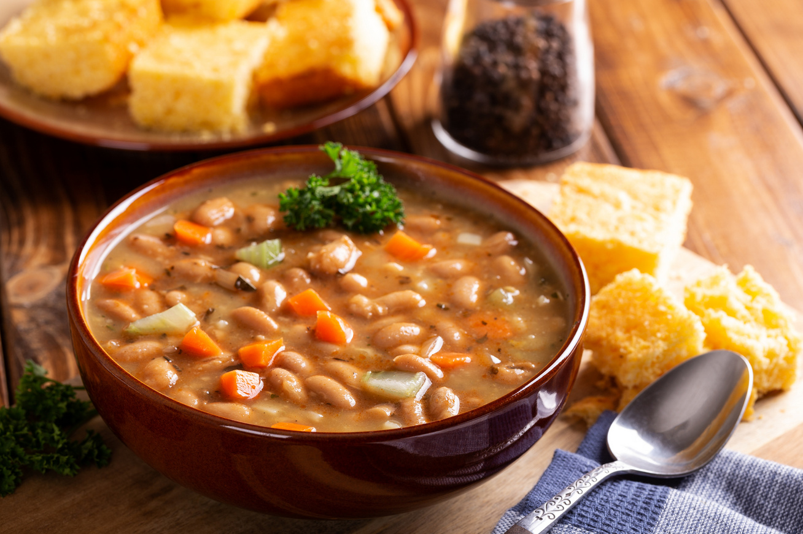

Bableves

Leírás
Fasza bableves kolbásszal meg mindennel ami kell!
Elkészítés
- babot előző este beáztatjuk.
- Másnap a csülköt felöntjük annyi hideg vízzel, amennyi ellepi, és közepes lángon 1,5-2 óra alatt puhára főzzük. Kivesszük a főzővízből, félretesszük, míg kihűl.
- A babot az áztatóvízzel együtt egy nagy fazékba öntjük, hozzáöntjük a csülök főzővizét, mellészórjuk a kis kockákra vágott paradicsomot és paprikát, és a finomra vágott fokhagymát. Közepes lángon 1-1,5 óra alatt félpuhára főzzük a babot.
- Ha letelt, hozzáadjuk a megpucolt és felkarikázott fehér és sárgarépát. Addig főzzük, míg az összes zöldség és a bab is megpuhul.
- Közben elkészítjük a csipetkét.
- A kolbászt felkarikázzuk, egy serpenyőben kiolvasztjuk, majd kivesszük a zsírjából. A visszamaradt zsíron üvegesre piritjuk a nagyon finomra vágott vöröshagymát, majd hozzáadjuk a lisztet, fél percig pirítjuk. Mehet mellé a fűszerpaprika, egyet keverünk rajta, majd felöntjük annyi vízzel, hogy sűrű tejföl állagú rántást kapjunk.
- A rántást belekeverjük a levesbe, újraforraljuk. Beletesszük a csipetkét, és pár percig együtt főzzük.
- A tejfölt elkeverjük egy kanál forró levessel, majd visszacsurgatjuk a levesbe. Végül beleszórjuk a finomra vágott petrezselymet, és hozzáadjuk a pirított kolbászkarikákat.
Hozzávalók
- 50 dkg fejtett bab
- 1.5 kg füstölt sertéscsülök
- 3 db babérlevél
- 1 közepes db zöldpaprika
- 1 közepes db paradicsom
- 3 gerezd fokhagyma
- 1 nagy db fehérrépa
- 2 közepes db sárgarépa
- 15 dkg kolbász